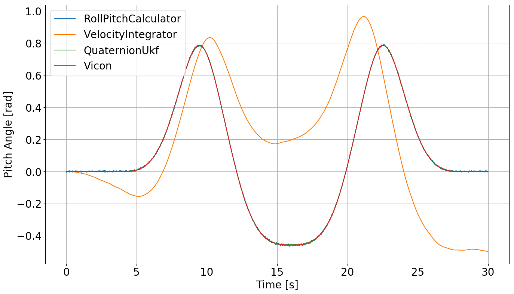
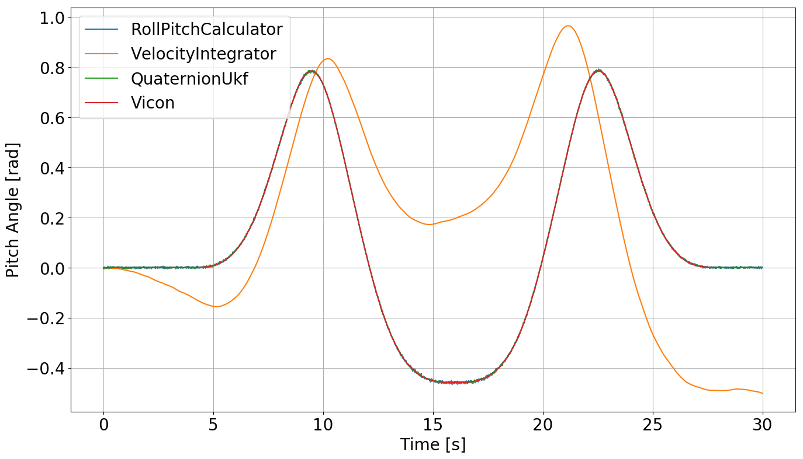

Quaternion UKF¶
Implentation of an unscented Kalman filter for orientation tracking of a robot (e.g. a quadrotor or drone).
Introduction¶
This implementation of a UKF for tracking orientation of a drone with gyro and accelerometer data follows closely that described in the paper “A Quaternion-based Unscented Kalman Filter for Orientation Tracking” by Edgar Kraft.
This project was completed as part of ESE 650: Learning in Robotics at the University of Pennsylvania, though it has been tweaked, and additional infrastructure has been built since then. This additional infrastructure includes a means to manufacture toy data to validate that the filter is indeed working properly.
Project Setup¶
Clone repository
1 | git clone https://github.com/mattlisle/quaternion-ukf.git
|
Create a virtual environment and run setup script (python version should be >= 3.6)
1 2 3 | virtualenv --python=/usr/bin/python /path/to/new/virtualenv
source /path/to/new/virtualenv/bin/activate
make install
|
Usage¶
There are three sample datasets to run the code on. To run in terminal:
1 | make run DATASET=<n>
|
Where <n> is a number from 1 to 3.
Implementation Details¶
As mentioned above, the implementation follows the example in the paper fairly closely. The goal is to fuse accelerometer and gyro data to get the best possible estimate of orientation, in terms of roll, pitch, and yaw.
Sensor data preprocessing¶
The first step in this process is to convert the IMU data from some digital reading to the corresponding value with the correct units. These sensors are manufactured to be fairly linear in the range in which the drone operates, so a linear regression model is a reasonable fit for calibrating the data, which leads to the following equation:
Where:
\(\boldsymbol{\beta}\) represents a vector made of essentially the slope and intercept for fitting the IMU data (which is what we want).
A has two columns, the first is one dimension of the IMU data, e.g. the accelerometer’s x-component
y is the ground truth, which we don’t quite have yet
Okay, so we’ve got the equation, (which numpy implements for us with np.linalg.lstsq ), but there’s still the unknown of how to get the ground truth data to fit the IMU data to. That’s where the vicon data comes in, which is a time series of rotation matrices over approximately the same timespan as the IMU data. Getting the expected accelerometer data is quite straightforward because the accelerometer is a measurement of the acceleration felt along the robot’s z-axis. In equation form:
Gravity in the world frame is just the world frame’s z-axis, and the vicon rotations define the rotation between the world and robot frames. However, solving for the rotational velocity is a bit trickier. If we assume that the angular velocity is constant, then we can say the following:
For convenience, let’s call \(R_1 R_0^{\top}\) something else:
The left side of that equation represents the rotation in a given timestep, which can be represented by an axis and an angle:
We can also convert from axis angle directly to angular velocity, which leads us to a solution we can actually use:
So now we have the following relationship where everything on the right side is known.
And from these equations we can convert the accelerometer and gyro data to units of acceleration and angular velocity, respectively
UKF implementation¶
Sigma points¶
There’s one slight difference between this implementation and the paper’s, and that is the multiplier in its equation 36:
Where
\(n\) is the number of degrees of freedom in the state
\(P_{k - 1}\) is the state covariance at the previous timestep
\(Q\) is the covariance chosen to model the uncertainty of applying the process model
I chose to do this instead:
That helped things remain stable. My reasoning as to why doing this could make sense is that the highly non-linear nature of rotations means that taking too wide a sample of the of the Gaussian results in poor reconstruction after the process model, so I use a slightly tighter-than-normal cluster of sigma-points.
Computing the sigma points from here follows equation 34 in the paper, with the one key difference that the multiplication of quaternions is backward:
This multiplication order makes sense because the gyroscope gives angular velocity relative to the world frame, which means that you need to pre-multiply the delta rotation calculated from the angular velocity. I reverse the quaternion multiplication in all parts of the process model compared to what’s in the paper.
It’s also worth noting that sigma points are often weighted, but I, like the authors of the paper, don’t weight them, though that could possibly improve estimation accuracy as a future feature.
Process Model¶
The angular velocity sigma points are used to project the quaternion sigma points forward in time with:
The projected sigma points are averaged to obtain the estimated state at the current timestep \(\hat{x}_k^-\). The quaternion components’ mean is computed using gradient descent, and the angular velocities’ mean by the barycentric mean.
At this point, we can also compute the estimated state covariance at the current timestep, \(P_k^-\), from the process model. That’s simply the matrix whose columns are the projected sigma points minus the mean of the projected sigma points multiplied by its transpose and divided by its rank. In other words, it’s equation 57 in the paper:
Where, \((\mathcal{X}_i - \hat{x}_k^-)\) represents a column of the matrix and the error of the process model, i.e. the deviation from the mean. The above equation becomes much simpler in code:
covariance_matrix = error_matrix @ error_matrix.T
Where ith column of the error_matrix is the same as \((\mathcal{X}_i - \hat{x}_k^-)\).
Measurement Model¶
With the projected sigma points from the first step, we can estimate the measurement that we would expect to have gotten at the current timestep. Like everything else in the implementation, it’s broken into the orientation and velocity components of the state.
My notation here is slightly different from the paper, so for clarity:
\(\mathcal{Z_i}\) is the measurement we would expect if project sigma point i were the state of the robot
\(q_{\mathcal{Y}_i}\) is the quaternion component of the ith projected sigma point
\(q_{acc}\) is the accelerometer measurement as a quaternion, i.e. \(0\textbf{w} + a_x\textbf{i} + a_y\textbf{j} + a_z\textbf{z}\)
\(\omega_{\mathcal{Y}_i}\) is the angular velocity component of the ith projected sigma point
The estimated measurement is simply the barycentric mean of the above matrix:
And the uncertainty of the predicted measurement is the covariance of the measurement matrix
Where \(R\) is the modeled measurement model uncertainty. We can also calculate the cross correlation matrix at this point with:
Kalman Update¶
We now have everything to need to (finally) finish our estimation of the state at this timestep. The Kalman gain is calculated from the two covariance matrices in the previous step:
And the update is made with:
There’s one catch though: the quaternion and angular velocity components have to be updated separately:
Where:
\(v\) is the 6D correction vector
\(v_r\) is 3D rotational part of the vector
\(v_\omega\) is 3D angular velocity part of the vector
\(\hat{q}_k\) is the quaternion part of \(\hat{x}_k\)
\(\hat{\omega}_k\) is the angular velocity part of \(\hat{x}_k\)
Results¶
There are two sets of results worth touching on: those of the manufactured data and those of one of the datasets recorded from an actual IMU. You can see the performance on the other datasets by running the code as described above in the usage section.
Filter |
Roll |
Pitch |
Yaw |
|---|---|---|---|
RollPitchCalculator |
0.002 |
0.002 |
-.— |
VelocityIntegrator |
0.624 |
0.449 |
0.311 |
QuaternionUkf |
0.001 |
0.002 |
0.105 |
I manufactured this data in such a way that the accelerometer was very accurate and the gyro had a lot of drift. The fact that the filter is able to reduce to root mean squared error in yaw compared to integrating the gyro data shows that the UKF implementation is working, at least to some degree.
Filter |
Roll |
Pitch |
Yaw |
|---|---|---|---|
RollPitchCalculator |
0.067 |
0.036 |
-.— |
VelocityIntegrator |
0.425 |
0.126 |
0.490 |
QuaternionUkf |
0.062 |
0.034 |
0.411 |
On the real data above, you can see that the UKF beats the methods that rely on a single source of data across the board. This is what we expect: as long as we’ve modeled the uncertainty of the process and measurement models reasonably well, fusing data from two sensors should always be better than relying on one of those two.
The below graphs show how well the UKF does at tracking the truth compared to the other implementations.
 
